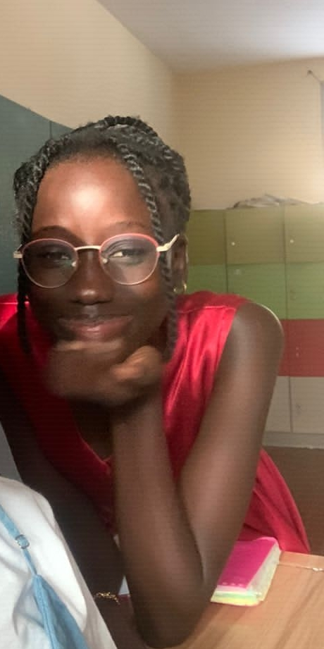

Hélène Marie Mossane Ndong
30/10/2006 - 16 ans
Keur Massar unité 9 n°231
775666107 / helenemossane06@gmail.com
FORMATIONS
Lycée d'Excellence Mariama Ba de Gorée
Lycée d'Excellence Mariama Ba de Gorée
Collège Notre Dame du Liban (Route de front de Terre)
***************************************************************************
COMPETENCES
Informatique: maitrise des logiciels Word et Power PGestion de Bibliothéque
Professionelles: Creative, Energetique, Ouverte d'esprit,Sociable
Langues
***************************************************************************
EXPERIENCES PROFESSIONELLES
2015 - 2016: Responsable de Classe
2018 - 2020: Responsable de la classe de Latin
2019 - 2020: Ministre du Dortoir
2019 - 2020: Présidente du comité d'organisation du Club de Litterature d'Art et de Philosophie
2020 - 2021: Présidente du Club de Litterature d'Art et de Philosophie
2022 - 2023: Vente dans une boutique scolaire
2022 - 2023: Organisations d'événements festifs et culturels
**************************************************************************
CENTRE D'INTERET
Lecture, Art, Dance, Cosmétologie, Cinema
***************************************************************************
ACTIVITES EXTRASCOLAIRES